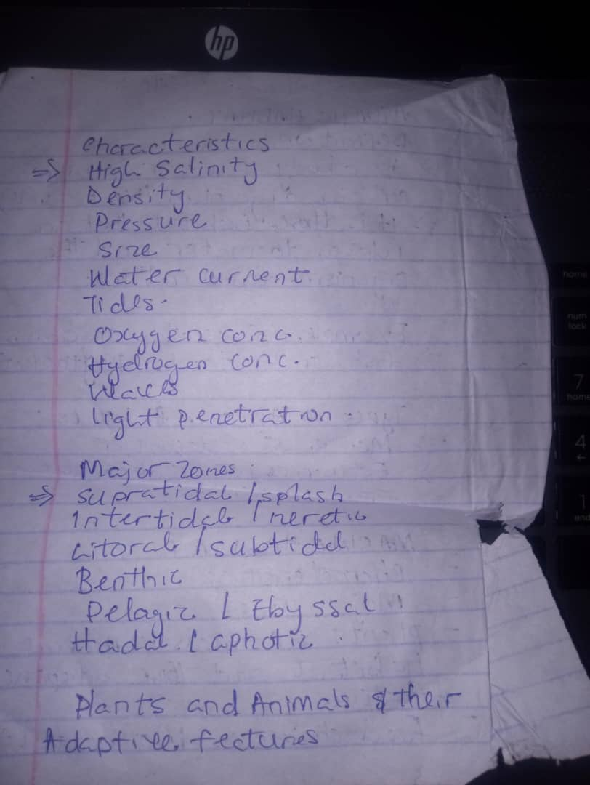
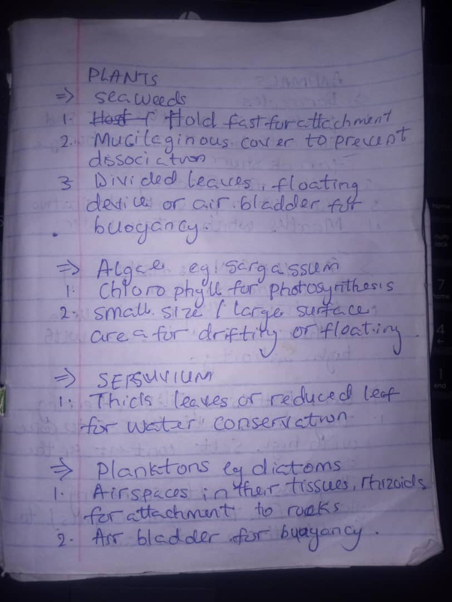
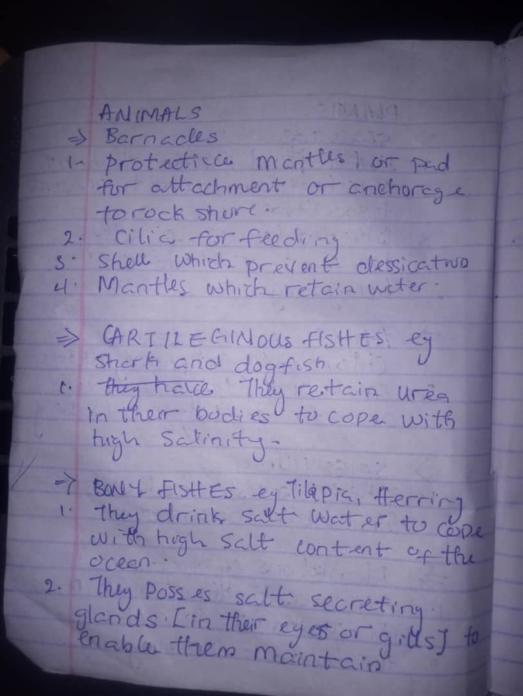
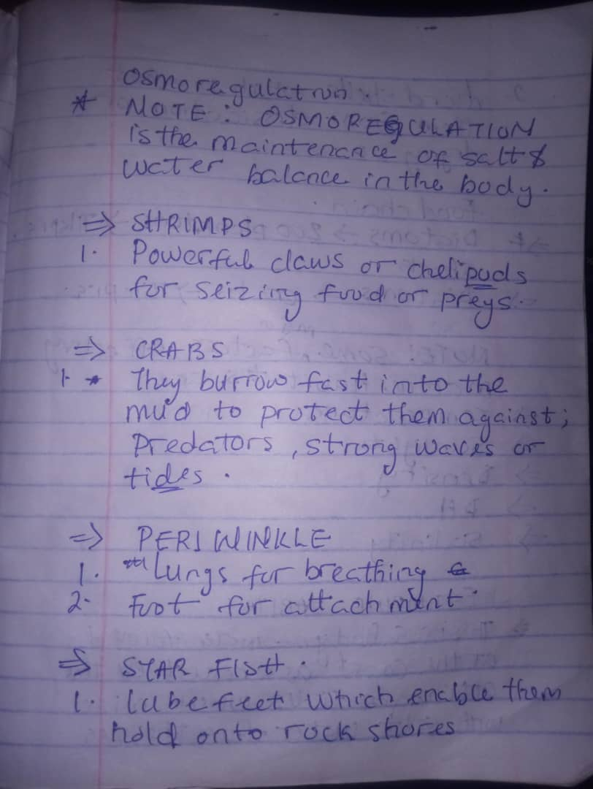
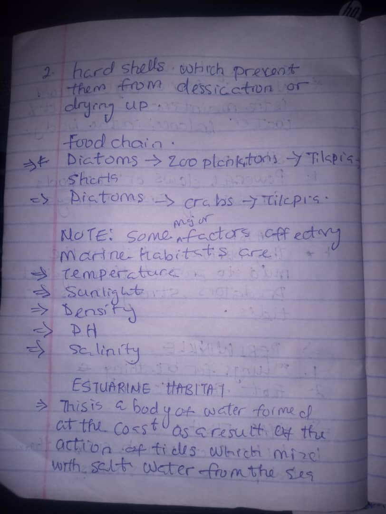
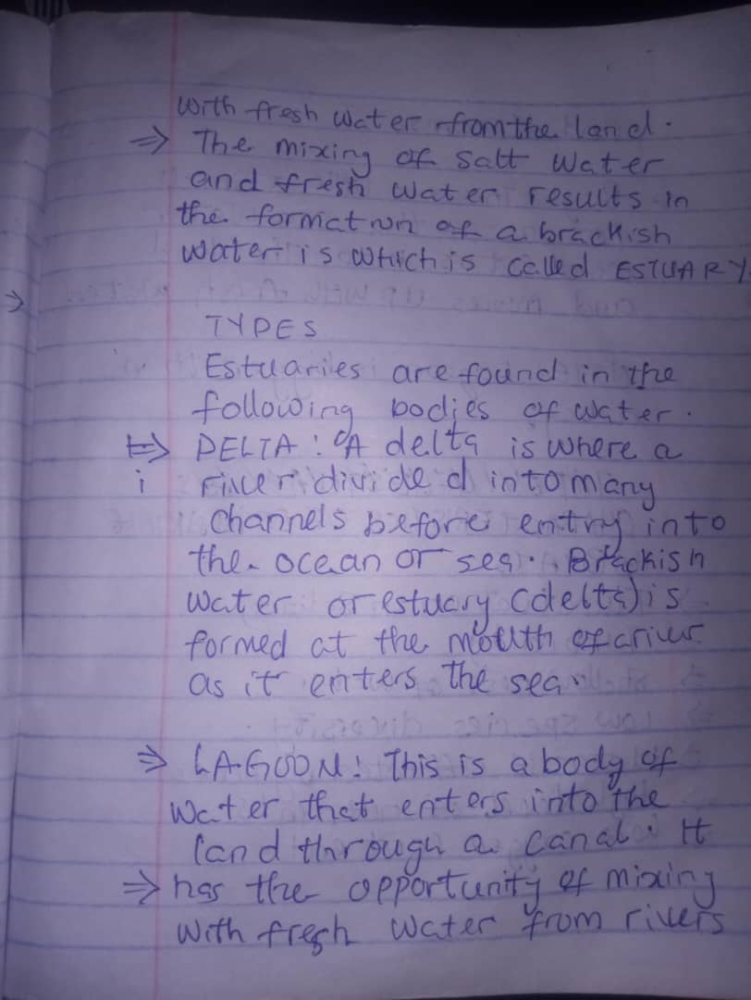
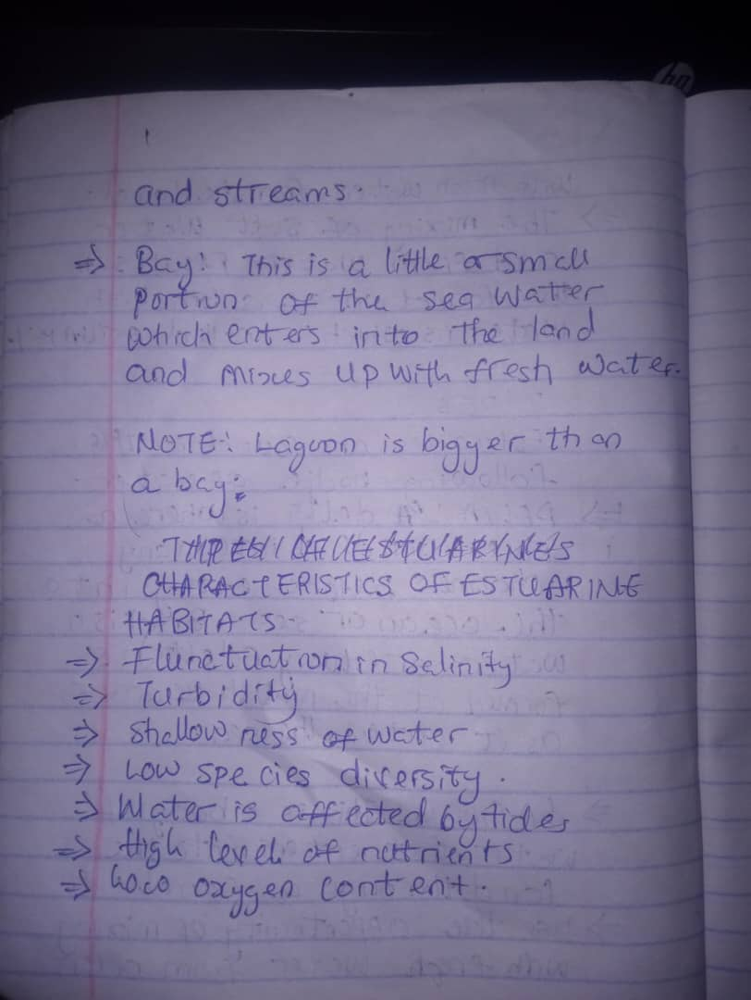
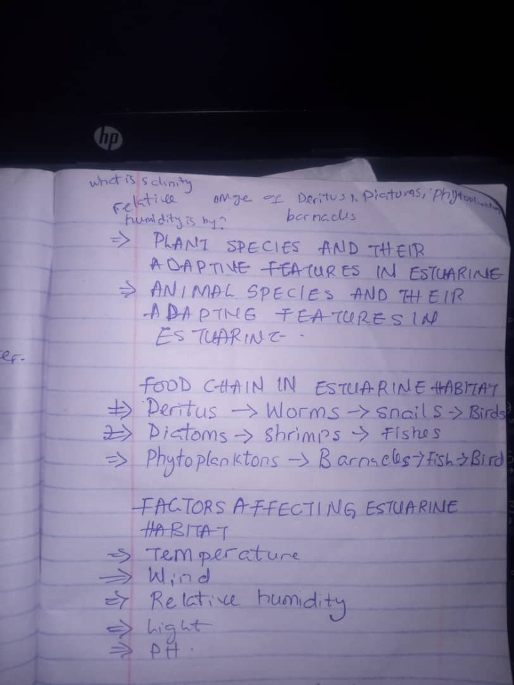

Aquatic & Terrestrial Habitats — Biology CA Classroom
Revise, Learn, and Practice — prepare for your Continuous Assessment
Image Library (Swipe or use arrows)









Tip: On mobile, swipe the image left or right. To use your own images, replace the
<img> tags above with your file URLs.Short Note — Key Concepts
An aquatic habitat is an environment where organisms live in or near water. A terrestrial habitat is land-based, such as forests and grasslands. Below are concise points you can revise quickly.
Marine Habitat
- Saltwater environment (oceans & seas). Zones: littoral, neritic, oceanic.
- Plants: phytoplankton, seaweeds (air bladders, flexible holdfasts).
- Animals: fish, whales, crabs (gills, streamlined bodies, fins).
- Food chain: Phytoplankton → Zooplankton → Small fish → Big fish → Shark.
Estuarine Habitat
- Where rivers meet the sea — brackish water with changing salinity.
- Plants: mangroves (salt-excluding roots, pneumatophores).
- Animals: crabs, oysters, mudskippers (salinity tolerance, air breathing adaptations).
- Factors: tides, salinity fluctuation, silt deposition, pollution.
- Food chain: Algae → Crab → Fish → Bird.
Forest Habitat (Terrestrial)
- Dense tree cover with several layers: canopy, understory, forest floor.
- Types of trees: hardwoods (e.g., mahogany), softwoods (e.g., pine) depending on forest type.
- Plants: trees, shrubs, climbers; adaptations — broad leaves for sunlight capture, drip tips in rainforests.
- Food chain: Leaves → Insects → Birds → Small mammals → Large predators.
Grassland Habitat
- Dominated by grasses; trees are few. Zones: savanna (with scattered trees), temperate grassland.
- Plants: deep-rooted grasses (adapted to drought and grazing).
- Animals: grazers (antelopes, zebras), predators (lions, cheetahs); adaptions — strong legs, herding behavior.
- Food chain: Grass → Grasshopper → Frog → Snake → Hawk.
Student Details
Make sure to type your full name and class before submitting.
Objective Questions (5)
1
Which of these is a characteristic of estuarine habitats?
2
The littoral zone of the marine habitat is:
3
Which plant adaptation helps seaweeds stay near the surface?
4
Which is an example of a marine food chain?
5
A common factor that affects estuarine habitats is:
Theory Questions (15) — short answers (sample CA style)
Submit & Get CA Feedback
When you submit, objective answers are marked instantly. Your name, class, score, and answers are sent to the teacher via Formspree.